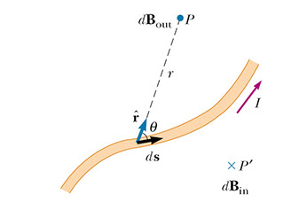
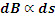
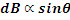
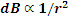
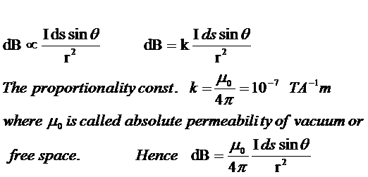
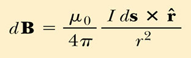
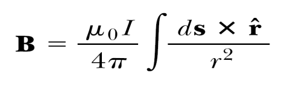
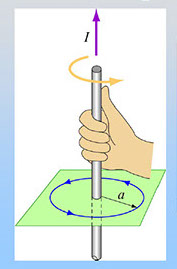

बायो - सेवार्ट का नियम

- यदि किसी चालक मे धारा I प्रवाहित होती है तो बायो – सेवार्ट ने अध्ययन किया कि यदि चुम्बकीय क्षेत्र इस धारावाही चालक के एक स्वल्पांश (ds) के द्वारा उत्पन्न होता है जैसे कि दिखाया गया है तो
- यह चालक में प्रवाहित विधुत धारा (I) के अनुक्रमानुपाती होती है।

यह चालक के उस स्वल्पांश की लम्बाई ds के अनुक्रमानुपाती होती है।

dB का मान ज्या (sinθ) के अनुक्रमानुपाती होता है जहाँ θ और ds और r के बीच कोण है।

dB का मान r2 के व्युत्क्रमानुपाती होता है।


चुम्बकीय क्षेत्र की दिशा
सदिश dB की दिशा ds तथा एकांक सदिश r^ दोनो के लम्बवत होती है
Biot-Savart’s law in vector form बायो – सेवार्ट नियम का सदिश रुप
सावधानी से अध्ययन करने के बाद हमलोग कह सकते है कि

सम्पूर्ण चालक के कारण चुम्बकीय क्षेत्र
सम्पूर्ण चालक के कारण चुम्बकीय क्षेत्र को dB का समाकलन चालक के समग्र लम्बाई तक करके प्राप्त किया जाता है

